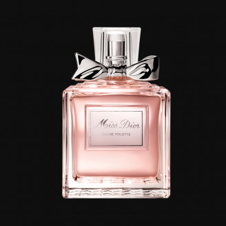

OCEAN BREEZE
-
Bergamot and sea salt give a crisp and salty freshness, while the heart notes of lavender and rosemary add an herbal and aromatic touch.
- The base notes of amber and cedarwood add depth and warmth,creating a balanced and alluring fragrance.The sleek and modern
bottle design of "Ocean Breeze" is perfect for the modern and
advanturous women who loves to explore new horizons.
- You will often see top, middle and base notes being used to describe a fragrance.
- The top notes of a fragrance, also known as the head or opening notes, are
what you smell immediately after spraying your perfume or aftershave; they
evaporate quickly but will form the first impression of the fragrance.
- The middle, or heart, notes appear once the top notes have disappeared.
These notes are considered to be the main body of the fragrance, lasting
longer than the top notes and are usually well-rounded.
- Base notes are what is left at the end; it is this smell that you
remember the most. The base notes are the longest lasting, mixing
with middle notes to create the full body of the perfume of aftershave.
- You’ve no doubt already heard the terms ‘Eau de Parfum’ and ‘Eau de Toilette’,
but what do they actually mean? These different fragrance types denote the
strength, and how long they are likely to last once you’ve sprayed them.
- Fragrances are created by mixing perfume oil with alcohol; the more perfume
oil, the stronger the fragrance and the longer it will last.
- Eau de Parfum (EDP) is the strongest type of perfume we sell. Eau de Parfum
contains between 10-20% of perfume oil, and is a popular choice with both
perfume brands and customers. Eau de Parfum will generally last around 8 hours.
- Eau de Toilette (EDT) is next, containing around 5-15% of perfume oil.
Eau de Toilette fragrances often have a quick burst of beautiful smells
before fading; meaning they can make a great first impression. Generally,
these fragrances will last somewhere between 4 and 7 hours.
- Eau de Cologne is a much lighter choice than the previous two.
Eau de Cologne has only around 2-4% of perfume oil, and is often
used as a body splash to freshen up at regular intervals. As a rule,
Eau de Cologne doesn’t last long; perhaps around 2-3 hours.
- The lightest concentration we sell is Eau Fraiche. There is only 1-2%
of perfume oil in this type of fragrance, and is incredibly light.
This is perfect for those who don’t want a heavy scent! Eau Fraiche will
only last a couple of hours at best, but they are great for creating a subtle, delicate fragrance.

OCEAN BREEZE
Rs.36,000/-